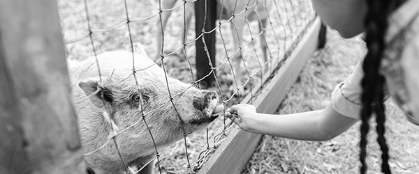
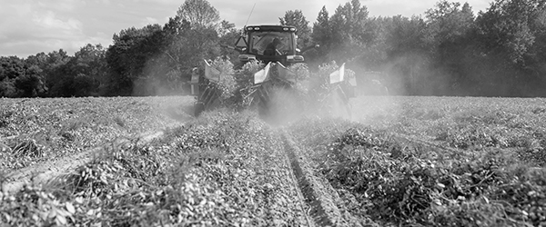

Conexões Visuais

Alegria e aprendizado no contato direto com a natureza.

A vibrante energia das feiras livres, trazendo o campo para a cidade.

Inovação e sustentabilidade: o futuro da agricultura ao alcance das mãos.